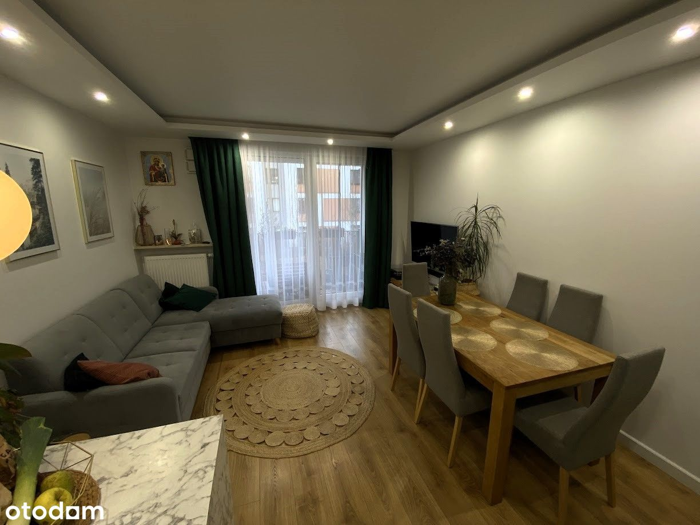
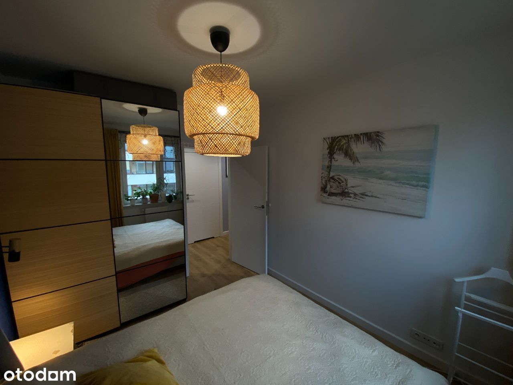

4 pokoje / Osiedle Wilno / Bez pośredników
Osiedle Wilno, Warszawa Targówek
1 149 000 PLN
69.43 m2
4 pokoje
1 piętro
Sprzedam 4-pokojowe mieszkanie bez pośredników.
NIERUCHOMOŚĆ
- Mieszkanie o powierzchni użytkowej 69,43 m2 składa się z 3 sypialni, salonu wraz z aneksem kuchennym, holu, łazienki, WC i garderoby. Dodatkowo mieszkanie posiada loggię o powierzchni 5,25 m2.
- Szczegółowy rzut mieszkania w załączonych zdjęciach
- Okna salonu wychodzą na południowy wschód, wszystkich sypialni na północny zachód w wyniku czego mieszkanie jest doświetlone przez cały dzień, a latem takie ułożenie pozwala skutecznie schładzać mieszkanie.
- W cenie mieszkania: meble kuchenne wraz ze sprzętem AGD, meble w zabudowie w łazienkach, holu i garderobie, rolety "Dzień Noc" na oknach w sypialniach (wraz z moskitierami).
- Mieszkanie znajduje się na Osiedlu Wilno.
- Budynek wybudowany przez Dom Development.
- Miejsce postojowe zlokalizowane w garażu podziemnym, obok wejścia do klatki (jest dostępna winda).
- Miejsce postojowe płatne dodatkowo - 40.000,00 zł.
LOKALIZACJA:
- 9 minut pieszo do stacji kolejowej Warszawa Zacisze – Wilno (ok. 700 m.);
- 4 minuty do stacji metra Dworzec Wileński pociągiem od stacji kolejowej Warszawa Zacisze – Wilno;
- 8 minut pieszo do przystanku autobusowego Plac Ostrej Bramy 01 (linie 156, 170; ok. 600 m.);
- 2 km do ul. Radzymińskiej, umożliwiającej wygodne poruszanie się po mieście;
- 5,5 km od budynku do zjazdu na drogę ekspresową S8;
OKOLICA:
- Osiedle Wilno, w którym zlokalizowany jest budynek, posiada bogatą ofertę handlowo-usługową (restauracje, sklepy spożywcze, fryzjer, żłobki, bawialnie, przedszkola itd.).
- 20 minut pieszo od budynku (1,5 km) znajduje się teren spacerowy w lesie na Utracie oraz Zalew Bardowskiego.
